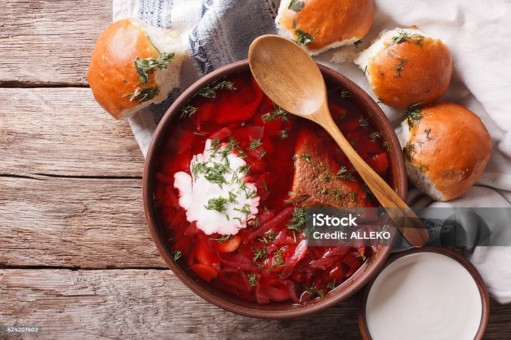
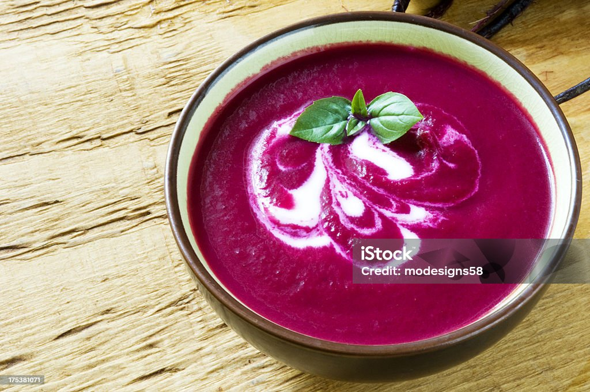
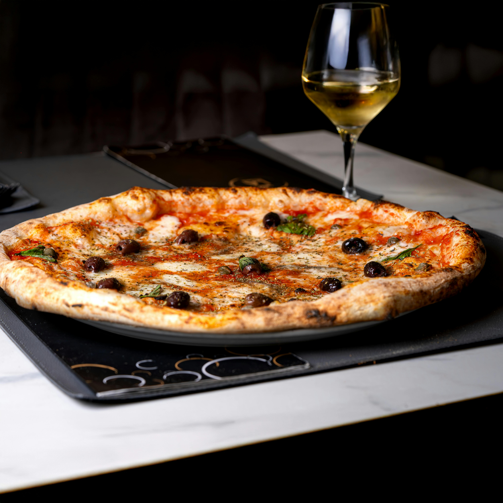

Biryani is a mixed rice dish,
mainly popular in South Asia. It is mainly made with rice, a choice of meat (chicken, goat,
lamb, beef, prawn, or fish) and lots of seasonings and spices. To cater to vegetarians in some cases, it is
prepared by substituting vegetables or paneer for the meat. Sometimes eggs or potatoes are also added.

Borscht is a sour soup, made with meat stock, vegetables and seasonings, common in Eastern
Europe
and Northern Asia.In English, the word borscht is most often associated with the soup's variant
of Ukrainian origin, made with red beetroots as one of the main ingredients, which give the dish its
distinctive red color

Feijoada or feijoada à brasileira (lit. Portuguese for "Brazilian-style feijoada") is a dish
that consists of a stew of black beans with various types of pork and beef. It is served with
farofa, white rice, sautéed collard green, and sliced oranges, among other sides. It is a
popular dish, typical of Brazilian cuisine.

Pizza Margherita or Margherita pizza is a typical Neapolitan pizza, roundish in shape
with a raised edge (the cornicione) and garnished with hand-crushed peeled tomatoes,
mozzarella (buffalo mozzarella or fior di latte), fresh basil leaves, and extra
virgin olive oil